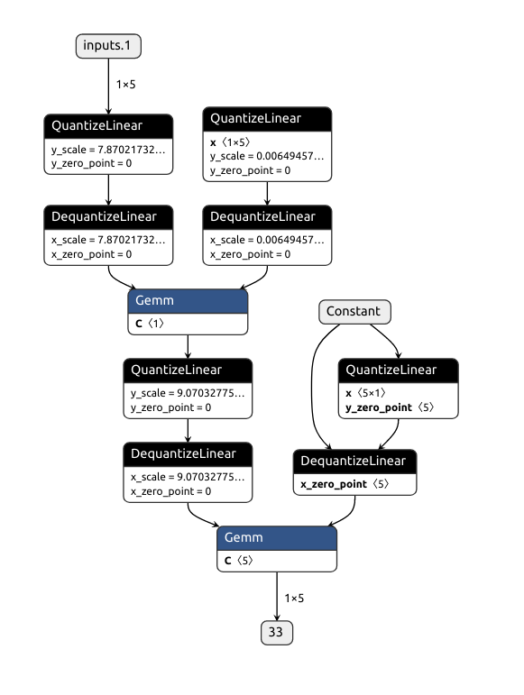

TensorRT
Table of Contents
1. TensorRT
1.1. Quantization Aware Training
1.1.1. Overview
https://github.com/NVIDIA/TensorRT/tree/master/tools/pytorch-quantization
TensorRT 的 pytorch_quantization 是一个实现 fake quantization 的 pytorch plugin
#!/usr/bin/env python3 # -*- coding: utf-8 -*- # 2021-10-29 14:24 import os import torch from torch import nn from torch import optim from torch.utils.data import DataLoader, Dataset import torch.nn.functional as F import numpy as np import torch.onnx from pytorch_quantization import nn as quant_nn from pytorch_quantization import calib from pytorch_quantization.tensor_quant import QuantDescriptor from pytorch_quantization import quant_modules from absl import logging logging.set_verbosity(logging.FATAL) def export_to_onnx(model): model.eval() dummy_input = torch.randn(1, 5) # use_fb_fake_quant 是 tensorrt 的一个 hack: 当需要导出为 onnx 时设为 true, # forward 时 fake_tensor_quant 会被替换为 _fb_fake_quant, 后者会调用torch 自 # 己的 fake_quantize_per_channel_affine 以便导出为 onnx 的 # QuantizeLinear/DequantizeLinear quant_nn.TensorQuantizer.use_fb_fake_quant = True torch.onnx.export( model, dummy_input, "fake.onnx", opset_version=13, ) quant_nn.TensorQuantizer.use_fb_fake_quant = False def get_data(): class PlainDataset(Dataset): def __init__(self): x = torch.round(torch.rand(10000) * 200) x = x.unsqueeze(1) x = torch.cat((x, x * 2, x * 3, x * 4, x * 5), 1) self.X = x def __getitem__(self, index): return self.X[index] def __len__(self): return len(self.X) training_set = PlainDataset() return DataLoader(training_set, batch_size=100, shuffle=True) def pretrain_model(): model = nn.Sequential( nn.Linear(5, 1), nn.Linear(1, 5), ) if os.path.exists("model.pt"): return train_model(model) torch.save(model.state_dict(), "model.pt") def train_model(model, epoch=500): criterion = nn.MSELoss() optimizer = optim.Adam(model.parameters()) for i in range(epoch): for x in get_data(): loss = criterion(model(x), x) optimizer.zero_grad() loss.backward() optimizer.step() # if i % 10 == 0: # print("epoch #%d: loss: %f" % (i, loss.detach().item())) def load_model(): quant_desc_input = QuantDescriptor(calib_method="histogram") quant_nn.QuantConv2d.set_default_quant_desc_input(quant_desc_input) quant_nn.QuantLinear.set_default_quant_desc_input(quant_desc_input) quant_modules.initialize() model = nn.Sequential( nn.Linear(5, 1), nn.Linear(1, 5), ) model.load_state_dict(torch.load("model.pt")) return model def fake_quantize(model): def collect_stats(model, data, num_batches): for name, module in model.named_modules(): if isinstance(module, quant_nn.TensorQuantizer): module.disable_quant() module.enable_calib() for i, data in enumerate(data): model(data) if i >= num_batches: break for name, module in model.named_modules(): if isinstance(module, quant_nn.TensorQuantizer): module.enable_quant() module.disable_calib() def compute_amax(model, **kwargs): for name, module in model.named_modules(): if isinstance(module, quant_nn.TensorQuantizer): if isinstance(module._calibrator, calib.MaxCalibrator): module.load_calib_amax() else: module.load_calib_amax(method="percentile") with torch.no_grad(): collect_stats(model, get_data(), num_batches=1000) compute_amax(model) # for name, module in model.named_modules(): # if isinstance(module, quant_nn.TensorQuantizer): # print("------") # print(name, module) return model def test(model): x = torch.tensor([[10, 20, 30, 40, 50]]).float() y_hat = model(x) print(y_hat) if __name__ == "__main__": pretrain_model() model = load_model() test(model) fake_quantize(model) test(model) train_model(model, epoch=1) fake_quantize(model) test(model)
1.1.2. Impl
1.1.2.1. monkey patching
quant_modules.initialize 会把 torch.nn 中的 Linear 等模块替换成 QuantLinear 等模块
1.1.2.2. foward
1.1.2.2.1. QuantLinear
forward 会被 propagate 给两个 TensorQuantizer: input_quantizer 和 weight_quantizer
def forward(self, input): quant_input = self._input_quantizer(input) quant_weight = self._weight_quantizer(self.weight) output = F.linear(quant_input, quant_weight, bias=self.bias) return output
1.1.2.2.2. TensorQuantizer
def forward(self, inputs): if self._disabled: return inputs outputs = inputs # 调用 TensorQuantizer.enable_calib() 会设置 _if_calib, 表示 calibrator 需要 # 记录以获得最大值 amax (abs max) if self._if_calib: self._calibrator.collect(inputs) # 调用 enable_quant() 会设置 _if_quant, 表示需要使用 amax 进行 fake quant使 # 用时需要先 enable calib, disable quant, calib 完成后计算 amax, 然后再 # enable quant, disable calib 进行带 fake quant 的 evaluation if self._if_quant: outputs = self._quant_forward(inputs) return outputs def _quant_forward(self, inputs): # amax 时通过 load_calib_amax 计算的 amax amax = self._get_amax(inputs) # fake_tensor_quant 是注册的 autograd function if not TensorQuantizer.use_fb_fake_quant: outputs = fake_tensor_quant( inputs, amax, self._num_bits, self._unsigned, self._narrow_range ) else: outputs = self._fb_fake_quant(inputs, amax) return outputs
1.1.2.2.3. fake_tensor_quant
https://pytorch.org/tutorials/beginner/examples_autograd/two_layer_net_custom_function.html
class FakeTensorQuantFunction(Function): @staticmethod def forward(ctx, inputs, amax, num_bits=8, unsigned=False, narrow_range=True): ctx.save_for_backward(inputs, amax) # fake quant 即 outputs=dequant(quant(inputs)) # 1. quant, 计算 scale 并计算 outputs=inputs*scale outputs, scale = _tensor_quant(inputs, amax, num_bits, unsigned, narrow_range) # 2. dequant, outputs=outputs/scale return outputs / scale.to(inputs.dtype) @staticmethod def backward(ctx, grad_outputs): # ... fake_tensor_quant = FakeTensorQuantFunction.apply
1.1.2.2.4. _fb_fake_quant
在导出成 onnx 时需要通过设置 use_fb_fake_quant = True 调用_fb_fake_quant, 后者会调用 torch.fake_quantize_per_channel_affine,以便 export 时能导出成 onnx 标准的 QuantizeLinear / DequantizeLinear
def _fb_fake_quant(self, inputs, amax): bound = (1 << (self._num_bits - 1 + int(self._unsigned))) - 1 outputs = torch.fake_quantize_per_tensor_affine( inputs, amax.item() / bound, 0, -bound - 1 if not self._unsigned else 0, bound, ) return outputs
导出成 onnx 的结果为:

1.1.2.3. backward
1.1.2.3.1. FakeTensorQuantFunction
Straight Through Estimation (STE) with clipping
def backward(ctx, grad_outputs): inputs, amax = ctx.saved_tensors zero = grad_outputs.new_zeros(1) grad_inputs = torch.where(inputs.abs() <= amax, grad_outputs, zero) return grad_inputs, None, None, None, None
1.1.3. TensorRT Optimizer
https://www.nvidia.com/en-us/on-demand/session/gtcspring21-s31653/
QuantLinear 把原来的 \(w*x+b\) 变成为 \(DQ(Q(w))*DQ(Q(x))+b\), 后续需要 tensorrt 的 optimizer 把 DQ 和 Q 前移或后移达到量化计算的目的, 例如:
x -> Q1 -> DQ1 -> [mul] -> y
^
w -> Q2 -> DQ2 -----|
可以优化为:
x -> Q1 -> [mul] -> [DQ1 -> DQ2] -> y
^
[w->Q2] -|
1.2. Sparsity
https://developer.nvidia.com/blog/accelerating-inference-with-sparsity-using-ampere-and-tensorrt/
https://github.com/NVIDIA/apex/tree/master/apex/contrib/sparsity 是一个做 prunning 的 pytorch 插件
- 它只会对 Linear, Conv2D 等的 weight 做 prunning,
- 它要求 weight 有特定的 shape, 比如对于 [x,y] 大小的 Linear Layer 需要 x%8==0, y%16==0
- 在 pruning 时, 默认使用 m4n2_1d 的方式, 即在一维的方向上每 4 个数固定选择两个绝对值最小的数进行 prunning
- prunning 之后会在 torch 模型中针对每个被 prune 的参数记录一个 mask buffer, 这个 buffer 有两个作用:
- GPU 需要根据这个 buffer 进行 sparsity 操作
- sparsity 工具 (ASP) 会对 pytorch 的 optimizer 进行 monkey patching, 修改过的 optimizer 会利用这个 buffer 保证对 prunning 后的模型进行训练时会跳过已经被 prune 的数据
#!/usr/bin/env python3 # -*- coding: utf-8 -*- # 2021-11-09 13:38 # -------------------- sparse_masklib.py -------------------- import sys import torch import numpy as np import collections from itertools import permutations def fill(x): return float(x.nonzero().size(0)) / torch.numel(x) def reshape_1d(matrix, m): # If not a nice multiple of m, fill with zeroes. if matrix.shape[1] % m > 0: mat = torch.cuda.FloatTensor( matrix.shape[0], matrix.shape[1] + (m - matrix.shape[1] % m) ).fill_(0) mat[:, : matrix.shape[1]] = matrix shape = mat.shape return mat.view(-1, m), shape else: return matrix.view(-1, m), matrix.shape valid_m4n2_1d_patterns = None def compute_valid_1d_patterns(m, n): # Early exit if patterns was already created. global valid_m4n2_1d_patterns if m == 4 and n == 2 and valid_m4n2_1d_patterns is not None: return valid_m4n2_1d_patterns patterns = torch.zeros(m) patterns[:n] = 1 valid_patterns = torch.Tensor(list(set(permutations(patterns.tolist())))) if m == 4 and n == 2: valid_m4n2_1d_patterns = valid_patterns return valid_patterns """ m:n 1d structured best """ def mn_1d_best(matrix, m, n): # Find all possible patterns. patterns = compute_valid_1d_patterns(m, n).cuda() # Find the best m:n pattern (sum of non-masked weights). mask = torch.cuda.IntTensor(matrix.shape).fill_(1).view(-1, m) mat, shape = reshape_1d(matrix, m) pmax = torch.argmax(torch.matmul(mat.abs(), patterns.t()), dim=1) mask[:] = patterns[pmax[:]] mask = mask.view(matrix.shape) return mask def m4n2_1d(mat, density): return mn_1d_best(mat, 4, 2) def create_mask(tensor, pattern="m4n2_1d", density=0.5): # Reshape tensor and mask. shape = tensor.shape ttype = tensor.type() t = tensor.float().contiguous() # 1d-tensor if len(shape) == 1: t = t.view(1, shape[0]) func = getattr(sys.modules[__name__], pattern, None) mask = func(t, density) return mask.view(shape).type(ttype) # 2d-tensor (in, out) elif len(shape) == 2: t = t.view(shape[0], shape[1]) func = getattr(sys.modules[__name__], pattern, None) mask = func(t, density) return mask.view(shape).type(ttype) # 3d-tensor (batch, in, out) elif len(shape) == 3: t = t.view(shape[0] * shape[1], shape[2]) func = getattr(sys.modules[__name__], pattern, None) mask = func(t, density) return mask.view(shape).type(ttype) # 4d-tensor (in, out, h, w) elif len(shape) == 4: # convs t = ( t.permute(2, 3, 0, 1) .contiguous() .view(shape[2] * shape[3] * shape[0], shape[1]) ) func = getattr(sys.modules[__name__], pattern, None) mask = func(t, density) mask = ( mask.view(shape[2], shape[3], shape[0], shape[1]) .permute(2, 3, 0, 1) .contiguous() ) return mask.view(shape).type(ttype) # -------------------- asp.py -------------------- import types import torch torchvision_imported = True try: import torchvision except ImportError: print("[ASP][Warning] torchvision cannot be imported.") torchvision_imported = False def eligible_modules( model, whitelist_layer_types, allowed_layer_names, disallowed_layer_names ): eligible_modules_list = [] for name, mod in model.named_modules(): if ( isinstance(mod, whitelist_layer_types) and name not in disallowed_layer_names ): if allowed_layer_names is not None and name not in allowed_layer_names: continue eligible_modules_list.append((name, mod)) return eligible_modules_list class ASP: __model = None __verbosity = 0 __optimizer = None __sparse_parameters = [] __calculate_mask = None @classmethod def init_model_for_pruning( cls, model, mask_calculator="m4n2_1d", verbosity=3, whitelist=[torch.nn.Linear, torch.nn.Conv1d, torch.nn.Conv2d, torch.nn.Conv3d], allowed_layer_names=None, disallowed_layer_names=[], allow_recompute_mask=False, custom_layer_dict={}, ): assert cls.__model is None, "ASP has been initialized already." cls.__model = model cls.__verbosity = verbosity if isinstance(mask_calculator, str): def create_mask_from_pattern(param): return create_mask(param, mask_calculator).bool() cls.__calculate_mask = create_mask_from_pattern else: cls.__calculate_mask = mask_calculator # user defined function # function to extract variables that will be sparsified. # idea is that you will add one of these functions for each module type that can be sparsified. if torchvision_imported: print( "[ASP] torchvision is imported, can work with the MaskRCNN/KeypointRCNN from torchvision." ) sparse_parameter_list = { torch.nn.Linear: ["weight"], torch.nn.Conv1d: ["weight"], torch.nn.Conv2d: ["weight"], torch.nn.Conv3d: ["weight"], torchvision.ops.misc.Conv2d: ["weight"], } else: sparse_parameter_list = { torch.nn.Linear: ["weight"], torch.nn.Conv1d: ["weight"], torch.nn.Conv2d: ["weight"], torch.nn.Conv3d: ["weight"], } if ( custom_layer_dict ): # Update default list to include user supplied custom (layer type : parameter tensor), make sure this tensor type is something ASP knows how to prune sparse_parameter_list.update(custom_layer_dict) whitelist += list(custom_layer_dict.keys()) for module_type in whitelist: assert module_type in sparse_parameter_list, ( "Module %s :: Don't know how to sparsify module." % module.dtype() ) # find all sparse modules, extract sparse parameters and decorate def add_sparse_attributes(module_name, module): sparse_parameters = sparse_parameter_list[type(module)] for p_name, p in module.named_parameters(): if p_name in sparse_parameters and p.requires_grad: # check for NVIDIA's TC compatibility: we check along the horizontal direction if p.dtype == torch.float32 and ( (p.size()[0] % 8) != 0 or (p.size()[1] % 16) != 0 ): # User defines FP32 and APEX internally uses FP16 math print( "[ASP] Auto skipping pruning %s::%s of size=%s and type=%s for sparsity" % (module_name, p_name, str(p.size()), str(p.dtype)) ) continue if p.dtype == torch.float16 and ( (p.size()[0] % 8) != 0 or (p.size()[1] % 16) != 0 ): # For Conv2d dim= K x CRS; we prune along C print( "[ASP] Auto skipping pruning %s::%s of size=%s and type=%s for sparsity" % (module_name, p_name, str(p.size()), str(p.dtype)) ) continue if cls.__verbosity >= 3: print( "[ASP] Sparsifying %s::%s of size=%s and type=%s for sparsity" % (module_name, p_name, str(p.size()), str(p.dtype)) ) mask = torch.ones_like(p).bool() buffname = p_name.split(".")[-1] # buffer names cannot contain "." module.register_buffer("__%s_mma_mask" % buffname, mask) if allow_recompute_mask: pruned = torch.zeros_like(p).cpu() module.register_buffer("__%s_mma_pruned_p" % buffname, pruned) else: pruned = None cls.__sparse_parameters.append( (module_name, module, p_name, p, mask, pruned) ) else: if cls.__verbosity >= 3: print( "[ASP] Not sparsifying %s::%s of size=%s and type=%s" % (module_name, p_name, str(p.size()), str(p.dtype)) ) for name, sparse_module in eligible_modules( model, tuple(whitelist), allowed_layer_names, disallowed_layer_names ): add_sparse_attributes(name, sparse_module) @classmethod def init_optimizer_for_pruning(cls, optimizer): assert cls.__optimizer is None, "ASP has initialized optimizer already." assert ( cls.__calculate_mask is not None ), "Called ASP.init_optimizer_for_pruning before ASP.init_model_for_pruning." # store pointer to original optimizer step method cls.__optimizer = optimizer cls.__optimizer.__step = optimizer.step def __step(opt_self, *args, **kwargs): # prune gradients before step method with torch.no_grad(): for ( module_name, module, p_name, p, mask, pruned, ) in cls.__sparse_parameters: if p.grad is not None: # thx pjudd p.grad.mul_(mask) # call original optimizer step method rval = opt_self.__step(*args, **kwargs) # prune parameters after step method with torch.no_grad(): for ( module_name, module, p_name, p, mask, pruned, ) in cls.__sparse_parameters: p.mul_(mask) return rval cls.__optimizer.step = types.MethodType(__step, cls.__optimizer) @classmethod def compute_sparse_masks(cls): with torch.no_grad(): for module_name, module, p_name, p, mask, pruned in cls.__sparse_parameters: if mask.sum() < mask.numel(): # when recalculating masks # restore dense parameter if allow_recompute_mask is enabled assert ( pruned is not None ), "Unable to restore dense parameter because allow_recompute_mask == False" p.add_(pruned.cuda()) mask.set_(cls.__calculate_mask(p)) if pruned is not None: # stow away pruned weights to cpu pruned.set_((p * (~mask)).cpu()) p.mul_( mask ) # in-place multiplication, so pruned weights are 0-values, hence checkpoint will have 0s for pruned weights if cls.__verbosity >= 2: print( "[ASP] Enabled %.2f%% sparsity for %s::%s of size=%s and type=%s" % ( 100.0 * mask.sum() / mask.numel(), module_name, p_name, str(p.size()), str(p.dtype), ) ) @classmethod def prune_trained_model(cls, model, optimizer): # add mask buffers to model (init_model_for_pruning), augment optimizer (init_optimizer_for_pruning) and compute masks (compute_sparse_masks) cls.init_model_for_pruning( model, mask_calculator="m4n2_1d", verbosity=2, whitelist=[torch.nn.Linear, torch.nn.Conv2d], allow_recompute_mask=False, ) cls.init_optimizer_for_pruning(optimizer) cls.compute_sparse_masks() # -------------------- test.py -------------------- import os import numpy as np import torch from torch import nn from torch import optim from torch.utils.data import DataLoader, Dataset import torch.nn.functional as F model = None optimizer = None class ToyDataset(Dataset): def __init__(self): x = torch.round(torch.rand(1000) * 200) x = x.unsqueeze(1) x = torch.cat((x, x * 2, x * 3, x * 4, x * 5, x * 6, x * 7, x * 8), 1) self.X = x self.Y = self.X def __getitem__(self, index): return self.X[index], self.Y[index] def __len__(self): return len(self.X) training_loader = DataLoader(ToyDataset(), batch_size=100, shuffle=True) def train(): criterion = nn.MSELoss() for i in range(500): for x, y in training_loader: loss = criterion(model(x.to("cuda")), y.to("cuda")) optimizer.zero_grad() loss.backward() optimizer.step() print("epoch #%d: loss: %f" % (i, loss.item())) def test(): x = torch.tensor([[2, 4, 6, 8, 10, 12, 14, 16]]).float() y_hat = model(x.to("cuda")) print("orig: ", x, " new: ", y_hat) def get_model(f): global model, optimizer if os.path.exists(f): model = torch.load(f).cuda() optimizer = optim.Adam(model.parameters(), lr=0.01) else: model = nn.Sequential( nn.Linear(8, 16), nn.PReLU(), nn.Linear(16, 8), ).cuda() optimizer = optim.Adam(model.parameters(), lr=0.01) train() torch.save(model, f) get_model("/tmp/model.pt") print("-------orig---------") test() print(model[2].state_dict()) ASP.prune_trained_model(model, optimizer) print("-------pruned---------") test() print(model[2].state_dict()) train() print("-------retrain---------") test() print(model[2].state_dict()) torch.save(model, "/tmp/model_sparse.pt")
--–—orig----–— orig: tensor() new: tensor(, device='cuda:0', grad_fn=<AddmmBackward>) OrderedDict([('weight', tensor([[ 0.1899, -0.1074, -0.0064, -0.0016, 0.0893, 0.2194, -0.1457, -0.1500, 0.0482, 0.0495, -0.1510, 0.0169, -0.0174, 0.0402, 0.1461, -0.1233], [-0.0973, -0.2051, 0.0303, -0.0798, 0.1052, -0.1524, -0.0244, 0.1359, 0.0051, 0.0985, -0.1482, 0.1417, -0.0118, 0.1361, 0.2233, -0.1164], [ 0.1049, -0.1537, -0.1860, 0.1423, -0.1657, -0.0253, -0.0455, 0.1699, 0.2134, 0.0081, -0.2659, 0.1806, 0.0515, 0.2417, -0.0409, 0.3283], [ 0.1426, 0.0729, 0.0950, 0.2379, -0.2145, 0.0646, -0.0936, 0.1097, 0.0842, -0.2154, -0.0906, -0.0958, 0.0363, 0.2453, 0.1978, 0.3038], [ 0.2264, -0.0101, 0.3551, -0.3178, 0.2250, -0.0257, 0.0879, -0.3122, -0.1913, -0.0425, -0.0036, 0.1085, 0.1470, 0.0149, 0.0971, 0.3013], [ 0.3303, 0.0674, -0.1155, -0.1443, -0.0213, -0.0546, 0.0669, -0.2751, -0.0199, 0.0575, -0.2252, 0.3843, -0.1892, 0.4178, -0.0364, 0.0071], [ 0.3373, -0.0020, 0.2039, -0.0458, 0.2323, -0.3360, 0.0140, -0.1100, -0.1204, -0.0694, -0.0018, 0.1073, 0.2118, 0.3473, 0.0345, -0.0222], [ 0.0731, -0.3941, 0.1664, 0.0100, 0.1053, -0.4457, 0.2373, -0.0818, -0.0015, -0.0019, -0.4326, 0.0886, -0.2492, 0.2418, 0.2013, 0.0996]], device='cuda:0')), ('bias', tensor([0.0658, 0.0500, 0.1469, 0.0165, 0.1377, 0.1143, 0.0687, 0.1848], device='cuda:0'))]) [ASP] torchvision is imported, can work with the MaskRCNN/KeypointRCNN from torchvision. [ASP] Auto skipping pruning 0::weight of size=torch.Size([16, 8]) and type=torch.float32 for sparsity [ASP] Enabled 50.00% sparsity for 2::weight of size=torch.Size([8, 16]) and type=torch.float32 --–—pruned----–— orig: tensor() new: tensor(, device='cuda:0', grad_fn=<AddmmBackward>) OrderedDict([('weight', tensor([[ 0.1899, -0.1074, -0.0000, -0.0000, 0.0000, 0.2194, -0.0000, -0.1500, 0.0000, 0.0495, -0.1510, 0.0000, -0.0000, 0.0000, 0.1461, -0.1233], [-0.0973, -0.2051, 0.0000, -0.0000, 0.0000, -0.1524, -0.0000, 0.1359, 0.0000, 0.0000, -0.1482, 0.1417, -0.0000, 0.1361, 0.2233, -0.0000], [ 0.0000, -0.1537, -0.1860, 0.0000, -0.1657, -0.0000, -0.0000, 0.1699, 0.2134, 0.0000, -0.2659, 0.0000, 0.0000, 0.2417, -0.0000, 0.3283], [ 0.1426, 0.0000, 0.0000, 0.2379, -0.2145, 0.0000, -0.0000, 0.1097, 0.0000, -0.2154, -0.0000, -0.0958, 0.0000, 0.2453, 0.0000, 0.3038], [ 0.0000, -0.0000, 0.3551, -0.3178, 0.2250, -0.0000, 0.0000, -0.3122, -0.1913, -0.0000, -0.0000, 0.1085, 0.1470, 0.0000, 0.0000, 0.3013], [ 0.3303, 0.0000, -0.0000, -0.1443, -0.0000, -0.0000, 0.0669, -0.2751, -0.0000, 0.0000, -0.2252, 0.3843, -0.1892, 0.4178, -0.0000, 0.0000], [ 0.3373, -0.0000, 0.2039, -0.0000, 0.2323, -0.3360, 0.0000, -0.0000, -0.1204, -0.0000, -0.0000, 0.1073, 0.2118, 0.3473, 0.0000, -0.0000], [ 0.0000, -0.3941, 0.1664, 0.0000, 0.0000, -0.4457, 0.2373, -0.0000, -0.0000, -0.0000, -0.4326, 0.0886, -0.2492, 0.2418, 0.0000, 0.0000]], device='cuda:0')), ('bias', tensor([0.0658, 0.0500, 0.1469, 0.0165, 0.1377, 0.1143, 0.0687, 0.1848], device='cuda:0')), ('__weight_mma_mask', tensor([[ True, True, False, False, False, True, False, True, False, True, True, False, False, False, True, True], [ True, True, False, False, False, True, False, True, False, False, True, True, False, True, True, False], [False, True, True, False, True, False, False, True, True, False, True, False, False, True, False, True], [ True, False, False, True, True, False, False, True, False, True, False, True, False, True, False, True], [False, False, True, True, True, False, False, True, True, False, False, True, True, False, False, True], [ True, False, False, True, False, False, True, True, False, False, True, True, True, True, False, False], [ True, False, True, False, True, True, False, False, True, False, False, True, True, True, False, False], [False, True, True, False, False, True, True, False, False, False, True, True, True, True, False, False]], device='cuda:0'))]) epoch #499: loss: 0.610391 --–—retrain----–— orig: tensor() new: tensor(, device='cuda:0', grad_fn=<AddmmBackward>) OrderedDict([('weight', tensor([[ 0.2176, -0.1109, -0.0000, -0.0000, 0.0000, 0.1861, -0.0000, -0.1460, 0.0000, 0.0276, -0.1884, 0.0000, -0.0000, 0.0000, 0.0870, -0.0764], [-0.1423, -0.1618, 0.0000, -0.0000, 0.0000, -0.1394, -0.0000, 0.1436, 0.0000, 0.0000, -0.1384, -0.0720, -0.0000, 0.1603, 0.1100, -0.0000], [ 0.0000, -0.1045, -0.1682, 0.0000, -0.1040, -0.0000, -0.0000, 0.1698, 0.1514, 0.0000, -0.2424, 0.0000, 0.0000, 0.2411, -0.0000, 0.2935], [ 0.1369, 0.0000, 0.0000, 0.2759, -0.1883, 0.0000, -0.0000, 0.1236, 0.0000, -0.0164, -0.0000, -0.1456, 0.0000, 0.2672, 0.0000, 0.2691], [ 0.0000, -0.0000, 0.4154, -0.2569, 0.1915, -0.0000, 0.0000, -0.3162, -0.1192, -0.0000, -0.0000, 0.0208, -0.0131, 0.0000, 0.0000, 0.3485], [ 0.2522, 0.0000, -0.0000, -0.0961, -0.0000, -0.0000, 0.0340, -0.2356, -0.0000, 0.0000, -0.1943, 0.2541, -0.0421, 0.4076, -0.0000, 0.0000], [ 0.2798, -0.0000, 0.2241, -0.0000, 0.1726, -0.3089, 0.0000, -0.0000, -0.0214, -0.0000, -0.0000, -0.1063, 0.3034, 0.3635, 0.0000, -0.0000], [ 0.0000, -0.3632, 0.2074, 0.0000, 0.0000, -0.4494, 0.2390, -0.0000, -0.0000, -0.0000, -0.4418, -0.0210, -0.2601, 0.2938, 0.0000, 0.0000]], device='cuda:0')), ('bias', tensor([0.0612, 0.0340, 0.1160, 0.0579, 0.1724, 0.1567, 0.1405, 0.1688], device='cuda:0')), ('__weight_mma_mask', tensor([[ True, True, False, False, False, True, False, True, False, True, True, False, False, False, True, True], [ True, True, False, False, False, True, False, True, False, False, True, True, False, True, True, False], [False, True, True, False, True, False, False, True, True, False, True, False, False, True, False, True], [ True, False, False, True, True, False, False, True, False, True, False, True, False, True, False, True], [False, False, True, True, True, False, False, True, True, False, False, True, True, False, False, True], [ True, False, False, True, False, False, True, True, False, False, True, True, True, True, False, False], [ True, False, True, False, True, True, False, False, True, False, False, True, True, True, False, False], [False, True, True, False, False, True, True, False, False, False, True, True, True, True, False, False]], device='cuda:0'))])